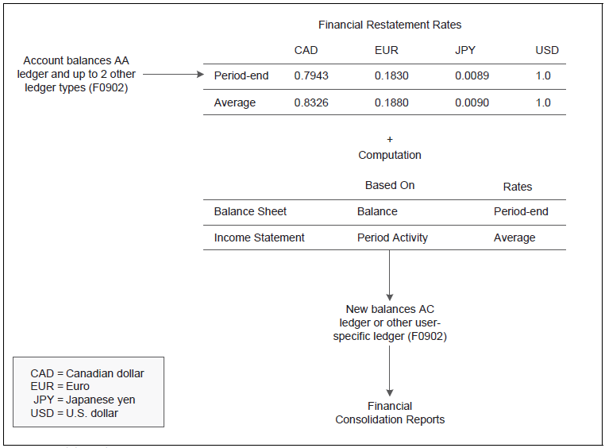
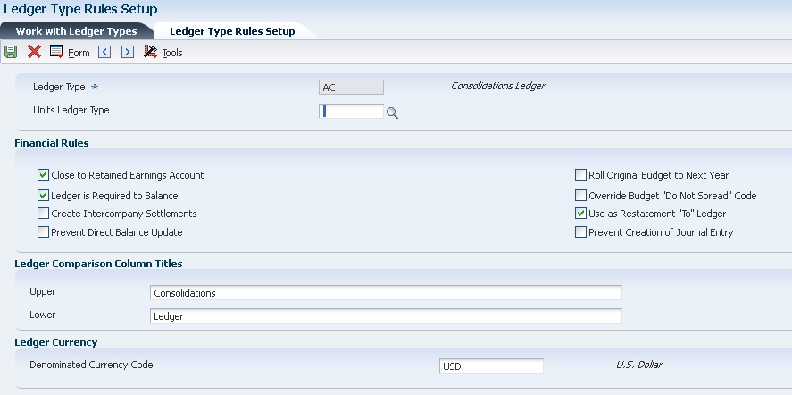
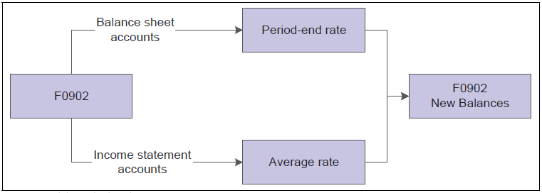
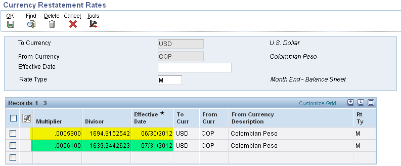
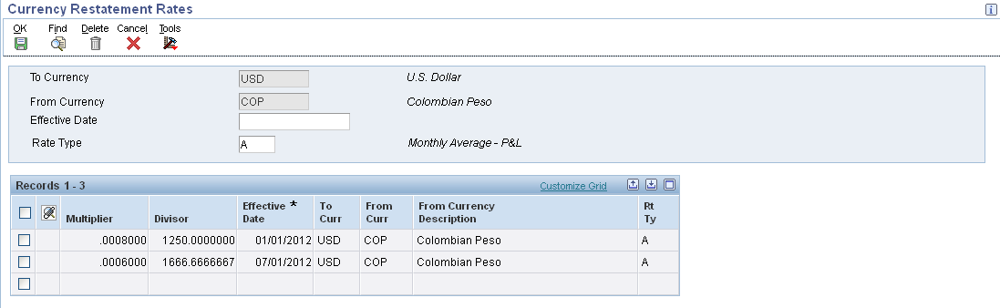
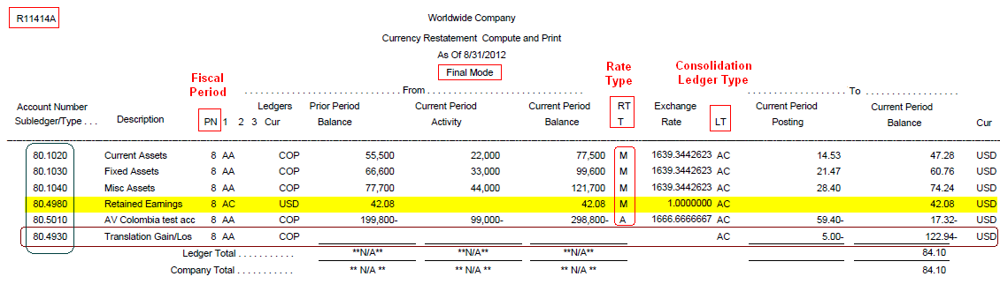

If the organization has companies operating in more than one country, you might have to consolidate financial reporting among the different companies. The Balance Restatement method restates balances into a single currency for consolidated reporting purposes. For example, by restating U.S. dollars to Canadian dollars, you can consolidate reporting with other Canadian companies.
You can use detailed currency restatement or the balance restatement to restate amounts into one currency. For balance restatement, the system restates the amounts based on Account Balance (F0902) table in the consolidation ledger (AC) or other user-specified ledger type at the balance level, thereby creating fewer records, whereas the Detailed Currency Restatement creates the restated amounts based on the F0911 transactions.
You might use balance restatement to:
Restate balance sheet accounts at the period-end rate and income statement accounts at an average rate prior to generating consolidated financial reports. For example, you can restate subsidiary company accounts into the parent company currency for consolidated reporting.
Combine amounts from up to three different ledgers into one ledger. For example, you can restate the AA (actual amounts) and GP (GAAP adjustments) ledgers into the AC (consolidation) ledger.
Restate accounts for what if budget analysis. For example, you can specify a budget rate that is different from that used in the accounting books for internal comparison purposes.
This method of currency restatement restates balances into a single currency for consolidated reporting purposes.
Scope
This document is intended for Finance Functional users who will be involved in the multicurrency processing in the General Accounting system.
Details

Program Functionality
The Compute Restated Balances program (R11414A) restates balances from a source ledger into a consolidation ledger (AC). Based on the exchange rates and computations that you set up, the Compute Restated Balances program:
Restates a selected period, or all periods up to and including the current period (year to date), as specified in a processing option.
Applies an individual rate to each period that you are restating, or applies a single rate to all periods.
Applies a different exchange rate for a specific range of accounts. If an exchange rate does not exist in the Currency Restatement Rates File table (F1113), the system prints a report with blanks in the exchange rate and restated balance columns. If you choose not to print restated balances for zero amounts, all of the accounts in that range are omitted from the report.
Restates up to three source ledger types to a single destination ledger type. Currency decimals are based on the currency code of the destination ledger type.
The Compute Restated Balances program uses information from the following tables:
Account Balance (F0902)
Account Ledger (F0911)*
Currency Restatement Rates (F1113)
Company Conversions Parameter (F1114)
* Balance restatement uses the F0911 table only if you enter manual journal entries in the AC ledger for adjustments. You can set a processing option to specify whether to include the F0911 adjustments when you run the Compute Balance Restatement program (R11414A).
NOTE: You can run the Compute Restated Balances program as often as necessary. Each time that you run the program, it overwrites existing balances unless you specify a different destination ledger type in a processing option.
You can run Compute Restated Balances program (R11414A) program in following modes:
Proof mode with report:
The system prints a report but does not create balances in the destination ledger.
Final mode with report:
The system creates balances in the destination ledger and prints a detailed audit trail.
Final mode without report:
The system creates balances in the destination ledger but does not print a detailed audit trail.
Logic for Restatement
To restate balances, the Compute Restated Balances program (R11414A):
Uses the data selection to select only those companies that have been assigned the computation ID that is entered in the processing options.
Reads the F0902 table to find a beginning balance and period amount in the actual amount (AA) ledger for each GL account in the range of accounts for the specified company.
Applies calculations based on the calculation method, as follows:
Period calculation balances for period 1. The system updates beginning balances, restates the balance for the current period, and clears all periods after the current period.
Period calculation balances for a selected period other than period 1. The system leaves previous balances as is, restates the balance for the current period, and clears all periods after the selected period.
Year-to-date balances for selected periods. The system restates balances for the selected periods and clears all periods after the selected period.
NOTE: Make sure that you restate balances up to and including the appropriate month and not beyond. If the current period is June, restate the year-to-date balances for January through June.
Amounts for a monetary account. If the currency associated with the destination ledger type matches the currency assigned to the account, the system uses the amounts from the foreign currency (CA) ledger instead of restating amounts from the AA ledger.
Creates or updates the destination ledger, usually ledger type AC (consolidation ledger), in the F0902 table.
NOTE: If you ran the annual close for the AC ledger, the system updated the APYC and APYN fields in the AC ledger at that time. The system calculates retained earnings if the Close to Retained Earnings Account check box on the Ledger Type Rules Setup form is selected for the AC ledger.
Setup
Before you can use balance currency restatement, you must set up certain information that the system uses during processing:
Multi-Currency Conversion Constant
Enter 'Z' Divisor or 'Y' Multiplier method for processing multi-currency transactions in General Accounting Constants (P0000).
When you work with multiple currencies, the system uses ledger types AA (actual amounts) and CA (foreign currency amounts). To perform balance currency restatement, the system also uses the AC ledger type. You can either set up ledger type AC or any user-specified ledger type for balance restatement.
This ledger contains a partial or complete chart of accounts with transactions in the reporting currency. Assign the currency code of the consolidated reporting currency to ledger type AC. Although ledger type AC is commonly used, the consolidation ledger type can be any user-specified ledger type.
NOTE: Ensure that ledger type AC (consolidation ledger) or other user-specified ledger type for balance restatement exists in both UDC 09/LT and UDC 11/TL.
You use the Ledger Type Rules Setup application (P0025) to set up your Ledger Type for Balance Currency Restatement.

Close to Retained Earnings Account
Select this check box if you restate the entire chart of accounts for ledger type AC.
Use as Restatement "To" Ledger
Select this check box.
Prevent Creation of Journal Entry
Clear this check box.
Denominated Currency Code
Enter the code of the currency in which you restate amounts in this field. A currency code designation for a ledger type applies to all companies using that ledger.
Ledger type AC requires a currency code to ensure that amounts are restated only in the designated currency and that the amounts have the correct number of decimal places.
To maintain the integrity of the AC ledger, do not change the currency code that you assign to the ledger after you begin using balance restatement.
Balance Restatement Rates Setup (P1113)
For balance restatement, you typically use different exchange rates for different ranges of accounts. For example, you might use a period-end exchange rate to restate balance sheets amounts and a period average exchange rate to restate income statement amounts, as shown below:

You must provide a rate to restate amounts from one currency to another. You can enter both an average rate for the period and a period-ending rate for each currency that you are restating. You update the table every period with new exchange rates to maintain a record of the rates, along with their effective dates and types.
You use the Currency Restatement Rates application (P1113) to set up exchange rates to convert amounts from the domestic to the consolidated reporting currency. Balance restatement rates are stored in the Currency Restatement Rates File table (F1113).
Processing Options
Limits Tab
Tolerance Limit
Specify the percentage by which revisions to the exchange rate are allowed before the system issues a warning message.
For example, if you enter 10.0, the system issues a warning message when the exchange rate changes by more than 10 percent.
Period End Rate Type

Average Rate Type

To Currency
Enter the currency code to which the account balances will be converted.
Use this field in the header area to specify the currency code for which you want to review or revise exchange rates.
Enter '*' to specify all currency codes.
From Currency
Enter the currency code from which account balances will be converted.
Use this field in the header area of the form to specify the currency for which you want to review or revise exchange rates.
Enter '*' to specify all currency codes.
Effective Date
Enter the beginning date that an exchange rate is effective for a currency relationship.
The system uses the effective date that you enter in the header area as search criteria to retrieve and display the exchange rate records on the form.
In the detail area, the effective date identifies the exchange rate to use for the currency restatement of the period.
Enter '*' to specify all effective dates.
Rate Type
Enter a following code from UDC table 11/RT that specifies the type of exchange rate to use to restate different ranges of accounts to calculate new balances:
'A': Period Average.
An average rate for the month, generally used with income statement accounts.
'M': Month-end.
A period-end rate, generally used with balance sheet accounts.
'H': Historical.
A historical rate, generally used for fixed asset accounts.
Enter '*' to specify all rate types.
Multiplier
Enter a number that a foreign currency amount is multiplied by to calculate a domestic currency amount.
The system uses the multiplier to calculate the currency restatement only if Y is entered in the Multi-Currency Conversion (Y,N,Z) field in the General Accounting Constants (P0000).
The system multiplies the From Currency account balance by the multiplier rate that you enter to derive the To Currency account balance.
The number in this field can have a maximum of seven decimal positions.
If more are entered, the system adjusts to the nearest seven decimal positions.
NOTE: For an exchange rate, users enters either multiplier or divisor. The system will calculate the opposite automatically.
Divisor
Enter a number that a foreign currency amount is divided by to calculate a domestic currency amount.
The system uses the divisor to calculate amounts for currency restatement only if Z is entered in the Multi-Currency Conversion (Y,N,Z) field in the General Accounting Constants.
The system divides the From Currency account balance by the divisor rate that you enter to derive the To Currency account balance.
The number in this field can have a maximum of seven decimal positions.
If more are entered, the system adjusts to the nearest seven decimal positions.
Computations Setup (P1114)
You use the Revise Company Currency Conversions form (P1114) to set up computations for balance restatement process.
For more information on setting up Computations, refer to Document 1481550.1 Overview of Computations Balance Setup.
Assigning Computation ID to a Company (P0010)
You use the Work with Companies program (P0010) to set up your companies for balance currency restatement under the Currency tab.
Restatement Computation
Assign a computation ID for each company for which you want to restate balances.
You can assign the same computation ID to multiple companies.
To override the computation ID assigned to a company, you can specify a different ID in a processing option for the Compute Restated Balances program (R11414A).
If you leave this field blank, make sure that you specify the correct computation ID in the processing options when you run the Compute Restated Balances program (R11414A) for this company.
If you have more than one computation ID for a specific company, leave this field blank and run the Compute Restated Balances program for each computation ID for the company.
Processing Options (R11414A)
Mode Tab
1. Process Mode
Enter the mode in which you would will like to run the Compute Restated Balances program (R11414A) program:
'0': Proof mode with report.
The system does not update the Account Balances table (F0902), but prints a report that shows the changes that would be made to the fiscal year and period in the F0902 table.
'1': Final mode with a report.
The system updates the fiscal year and period in the Account Balances table (F0902). The system also prints a report that shows a detailed audit trail changes.
'2': Final mode without a report.
The system updates the fiscal year and period in the Account Balances table (F0902). The system does not print a report.
Period or YTD Tab
1. Period or YTD Processing
Enter '1' to restate all periods in a specific year to date.
Default of blank will restate only a specific period.
You can specify the period in the Restatement Period and year in the Restatement Year processing options respectively.
2. Restatement Period
If you leave the Period or YTD Processing processing option blank, you use this Restatement Period processing option to specify the period to restate. For example, if you leave the Period or YTD processing option blank, you can enter 8 for the eighth period of the fiscal year.
If you leave this processing option blank, the system restates the current period as defined for the EnterpriseOne General Accounting system on the Set Up Company form (P0010).
3. Restatement Year
If you enter 1 in the Period or YTD processing option, you use this processing option to specify the year to restate. Enter the last two digits of the fiscal year to restate. For example, enter 06 for 2006.
If you leave this processing option blank, the system restates the current year to date as defined for the EnterpriseOne General Accounting system on the Set Up Company form (P0010).
Zero Balance Tab
1. Suppress Zero Balances
Enter '1' to suppress records for processing that do not have activity in the period being restated.
Default of blank will process all records for the period.
Computation ID Tab
1. Computation ID
Specify the computation ID to be used by the restatement program for restating balances for a company.
This processing option overrides the default computation ID setup in the Company Constants (P0010) under the Currency tab.
If you enter a computation ID, all of the companies that you include in data selection must be assigned the computation ID you enter, else it would lead to mismatch between the data being selected.
If you leave this processing option blank, the program uses the default computation ID that is assigned to the Company in the Work with Companies application (P0010).
Note: In this particular example, the Computation ID 'H' as setup above in the Computations Setup (P1114) is being used to demonstrate the functioning of Balance Restatement Method.
Ledger Tab
1. Destination Ledger Type
Enter a specific ledger type to which the program restates amounts.
If you leave this processing option blank, the program processes all destination ledgers.
The destination ledger is also known as the To Ledger. For example, you set up three computations for Company 70. Each calculation updates a different destination ledger type.
If you leave this processing option blank, the program runs all three computations and creates balances for each destination ledger type.
If you enter a ledger type in this processing option, the program runs only the computations for the destination ledger type you entered.
Exchange Rate Tab
1. Exchange Rate
Enter '1' to use the exchange rate for the period being restated.
Default of blank will use the exchange rate for the current period.
NOTE: When restating year-to-date balances, enter '1' to restate all periods using the exchange rate for the period selected.
Adjustments Tab
1. Check for Adjustments
Enter '1' to not include manual journal entry adjustments corresponding to the consolidated ledger type (AC).
Enter this value only if you have not entered manual journal entry adjustments.
The program bypasses the search for adjustments during processing.
Default of blank will only include manual journal entry adjustments from the Account Ledger table (F0911) in the restated balance.
Data Selection (R11414A)
You can use data selection to select the companies for which you would like to restate transactions. If you do not specify companies in the data selection, the system selects only those companies that have been assigned the computation ID entered in the processing options (R11414A).
Running the Compute Restated Balances (R11414A)
Reviewing the Report
R11414A report run for Period '8' processing in Final mode with report.

When reviewing the report, ensure that:
Every AA ledger amount has an AC ledger amount.
No manual journal entries exist for the AC ledger in the translation adjustment or retained earnings account.
For period processing, the report displays account transactions with a blank in the To Currency Period Posting and To Current Period Balance columns and a + sign to indicate that the account balance by currency amounts appear in the last transaction line for the account.
For year-to-date processing, the report displays each account transaction by originating currency in the To Current Period Posting and To Current Period Balance columns. It does not display a + sign.
Frequently Asked Questions
For frequently asked questions, refer to Document 664912.1 Frequently Asked Questions on the Balance Restatement Method.